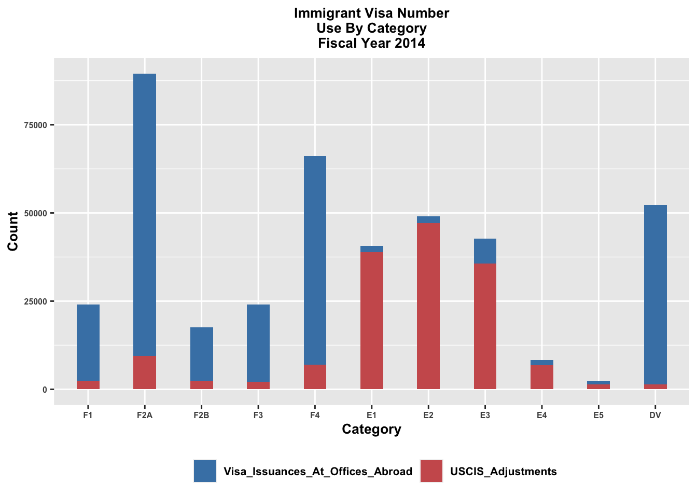

ImmigrantVisaNumber2014 = data.frame(
Category = factor(c("F1", "F2A", "F2B", "F4", "E1", "E2", "E3", "E4", "E5", "DV"), levels = c("F1", "F2A", "F2B", "F4", "E1", "E2", "E3", "E4", "E5", "DV")),
Visa_Issuances_At_Offices_Abroad = c(21511, 80041, 15137, 21931, 59140, 1680, 1880, 7088, 1489, 9228),
USCIS_Adjustments = c(2480, 9451, 2382, 2100, 7020, 38928, 47191, 35611, 6798, 1464)
) Design-Codes
I imported the data from the SAS website and created a dataframe named “ImmigrantVisaNumber2014.” The original data pertains to “Immigrant Visa Number Use by Category Fiscal Year 2014”.
Re-Design 1: Bar Plot with GGplot2
library(ggplot2)
melted_data = reshape2::melt(ImmigrantVisaNumber2014, id.vars = "Category")
melted_data$variable = factor(melted_data$variable, levels =
c("Visa_Issuances_At_Offices_Abroad","USCIS_Adjustments"))
ggplot(melted_data, aes(x = Category, y = value, fill = variable)) +
geom_bar(stat = "identity", width = 0.4) +
labs(title = "Immigrant Visa Number\nUse By Category\nFiscal Year 2014",x = "Category", y = "Count") +
scale_fill_manual(values = c("USCIS_Adjustments" = "indianred", "Visa_Issuances_At_Offices_Abroad" = "steelblue")) +
theme(legend.position = "bottom",
text = element_text(size = 10, face = "bold"),
axis.text.x = element_text(size = 6, face = "bold"),
axis.text.y = element_text(size = 6, face = "bold"),
axis.title.x = element_text(size = 10, face = "bold"),
axis.title.y = element_text(size = 10, face = "bold"),
plot.title = element_text(size = 10, face = "bold", hjust = 0.5),
legend.title = element_text(face = "bold")) +
guides(fill = guide_legend(title = NULL)) 
Design 1: Bar Plot with Plotly
library(ggplot2)
library(reshape2)
library(plotly)
Attaching package: 'plotly'The following object is masked from 'package:ggplot2':
last_plotThe following object is masked from 'package:stats':
filterThe following object is masked from 'package:graphics':
layoutmelted_data = reshape2::melt(ImmigrantVisaNumber2014, id.vars = "Category")
melted_data$variable = factor(melted_data$variable, levels = c("Visa_Issuances_At_Offices_Abroad", "USCIS_Adjustments"))
gg = ggplot(melted_data, aes(x = Category, y = value, fill = variable)) +
geom_bar(stat = "identity", position = "dodge", width = 0.7) +
labs(title = "Immigrant Visa Number Use By Category Fiscal Year 2014", x = "Category", y = "Count") +
scale_fill_manual(values = c("USCIS_Adjustments" = "indianred", "Visa_Issuances_At_Offices_Abroad" = "steelblue")) +
theme(legend.position = "bottom",
text = element_text(size = 10, face = "bold"),
axis.text.x = element_text(size = 6, face = "bold"),
axis.text.y = element_text(size = 6, face = "bold"),
axis.title.x = element_text(size = 10, face = "bold"),
axis.title.y = element_text(size = 10, face = "bold"),
plot.title = element_text(size = 9, face = "bold", hjust = 0.5), # Add a comma here
legend.title = element_text(face = "bold")) +guides(fill = guide_legend(title = NULL))
plotly_gg = ggplotly(gg)
plotly_gg = plotly_gg %>%
layout(legend = list(orientation = "h", y = -0.2, x = 0.2))
print(plotly_gg)Design 2: Line Plot with Plotly
library(ggplot2)
library(plotly)
base_plot = ggplot(melted_data, aes(x = Category, y = value, color = variable, group = variable)) + geom_line() + facet_wrap(~variable, scales = "free_y") +
labs(title = "Immigrant Visa Number Use By Category FY 2014", x = "Category", y = "Count") +
scale_color_manual(values = c("Visa_Issuances_At_Offices_Abroad" = "skyblue", "USCIS_Adjustments" = "red")) + theme(legend.position = "bottom")
highlight_plot = ggplotly(base_plot, tooltip = c("Category", "value", "variable"))
highlight_plot = highlight_plot %>%
layout(legend = list(orientation = "h", x = 0.2, y = -0.1, traceorder = 'normal'))
highlight_plot = highlight_plot %>%
layout(title = list(text = "Immigrant Visa Number Use By Category FY 2014", x = 0.5, xanchor = "center"))
highlight_plot Design 3: Bubble Plot with Plotly
library(ggplot2)
library(plotly)
base_plot = ggplot(melted_data, aes(x = Category, y = value, size = value, color = variable)) + geom_point(alpha = 0.9) + labs(title = "Immigrant Visa Number Use By Category FY 2014", x = "Category", y = "Count") + scale_color_manual(values = c("Visa_Issuances_At_Offices_Abroad" = "skyblue", "USCIS_Adjustments" = "red")) +
theme( text = element_text(size = 10, face = "bold"),
axis.text.x = element_text(size = 10, face = "bold"),
axis.text.y = element_text(size = 10, face = "bold"),
axis.title.x = element_text(size = 12, face = "bold"),
axis.title.y = element_text(size = 12, face = "bold"),
plot.title = element_text(size = 10, face = "bold", hjust = 0.5))
highlight_plot <- ggplotly(base_plot, tooltip = c("Category", "value", "variable"))
highlight_plot <- highlight_plot %>%layout(
title = list(text = "Bubble Chart of Visa Issuances and USCIS Adjustments", x = 0.5, xanchor = "center"),
legend = list(orientation = "h", x = 0.2, y = -0.3, traceorder = 'normal', title = list(text = NULL)))
highlight_plot